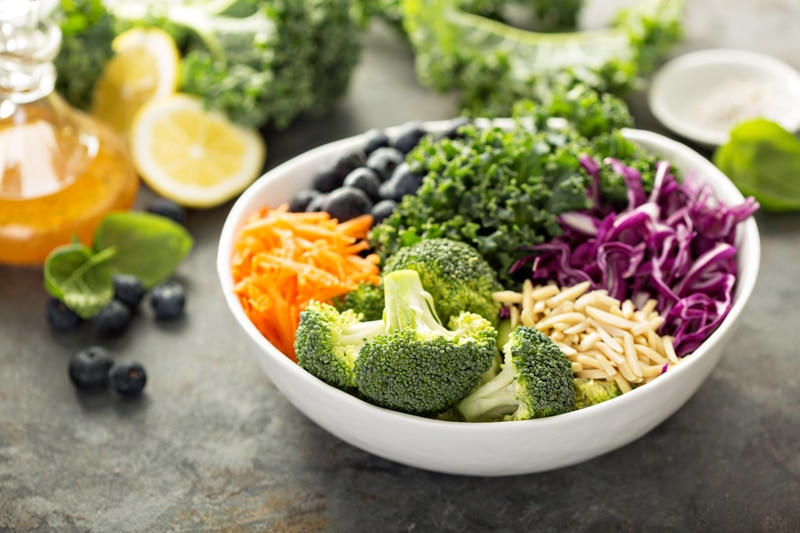

#2 – Protein for Plant-Based Vegans (+PDF)
Where do I get my protein? This question is one of the hottest topics of concern when a person decides to eat a vegan or high-raw vegan diet. Eating a variety of foods is key to getting the protein you need to achieve optimal health.

What is protein?
To grasp what protein is, we need to understand what makes a protein. Let’s look at the alphabet as an analogy. Think of protein as the alphabet and amino acids as the letters of the alphabet.
Letters can form a countless number of words. Think about it, how is it that so many words are made from those twenty-six letters? The same is true when it comes to different combinations of various amino acids. They come together in different configurations to make up all the different kinds of proteins that our body requires. Without going too deep into science, I will mention the two that you most likely have heard of over the years — Essential and Non-Essential Amino Acids.
- Essential Amino Acids – cannot be made by the body. As a result, they must come from food. There are nine essential amino acids to create a complete protein; histidine, isoleucine, leucine, lysine, methionine, phenylalanine, threonine, tryptophan, and valine.
- Non-Essential Amino Acids – are produced by our bodies, even if we do not get it from the food we eat. These Amino Acids are alanine, asparagine, aspartic acid, and glutamic acid.
Where do Vegans Find Proteins?
Some particularly awesome sources of protein for raw vegans are listed below.
I prepared a Quick Guide to Protein-Packed Foods, click (NouveauRaw – Where Do I Get My Protein?) to view and print it.
- Fruits get between 4 and 8 percent of their calories from protein but watch the sugar content. The top fruits (per 100 calories) are goji berries (dried), casaba melons, guavas, lemons without peel, cherries, starfruit, mulberries, and blackberries.
- Leafy greens are a good source of protein. Two cups of kale, for example, has 4 grams of protein, and a head of lettuce has 5 grams. Two large bunches of greens will give you between 15 and 20 grams of protein.
- Vegetables high in protein include lima beans, bean sprouts, green peas, spinach, sweet corn, asparagus, artichokes, Brussels sprouts, asparagus, and broccoli.
- Nuts and seeds are also packed with protein. High-protein nuts and seeds include hemp seeds, pumpkin seeds, peanuts, almonds, pistachios, sunflower seeds, flax seeds, sesame seeds, chia seeds, cashews, and more.
- Sprouts are 20 to 34 percent protein.
- Spirulina is 68 percent protein!
How much protein do you need?
 A person’s required daily protein intake tends to vary based on several factors such as age, gender, health condition, lifestyle, activity, etc. Without proper protein, we wouldn’t survive. If you get too little protein, you can suffer from fatigue, weakness, or muscle loss. Your metabolism slows down, and you put yourself at risk of gaining weight. It also weakens your immune system.
A person’s required daily protein intake tends to vary based on several factors such as age, gender, health condition, lifestyle, activity, etc. Without proper protein, we wouldn’t survive. If you get too little protein, you can suffer from fatigue, weakness, or muscle loss. Your metabolism slows down, and you put yourself at risk of gaining weight. It also weakens your immune system.
There are a lot of different belief systems out there on what percentage of macronutrients (carbohydrates, fat, and protein) are needed for the body. The RDA, Keto, Adkins, you name it. Unless you are on a special diet, I recommend starting with what the RDA (Recommended Daily Allowance) suggests or better yet, talk to your wellness practitioner to discuss your needs. Pay attention to your body and make adjustments if need be and see how you feel.
If you are planning on eating a vegan diet, I suggest that you find an online food tracker site to log your daily foods. Tracking your food intake will help you determine if you are consuming enough protein for the day. With this tool, you will soon start to recognize which foods are higher or lower in protein. Once you are at that point, ditch the tracking and start listening to your body.
The Recommended Daily Allowance (RDA) change with age:
- Infants require about 10 grams a day.
- Teenage boys need up to 52 grams a day.
- Teenage girls need 46 grams a day.
- Adult men need about 56 grams a day.
- Adult women need about 46 grams a day.
- Pregnant or lactating women need about 71 grams a day.
Disclaimer
This website is not intended to provide medical advice. All content, including text, graphics, images, and information available on this site is for general informational, entertainment and educational purposes only. The content is not intended to be a substitute for professional diagnosis or treatment. The author of this site is not responsible for any adverse effects that may occur from the application of the information on this site. You are encouraged to make your own healthcare decisions, based on your research and in partnership with a qualified healthcare professional.
© AmieSue.com